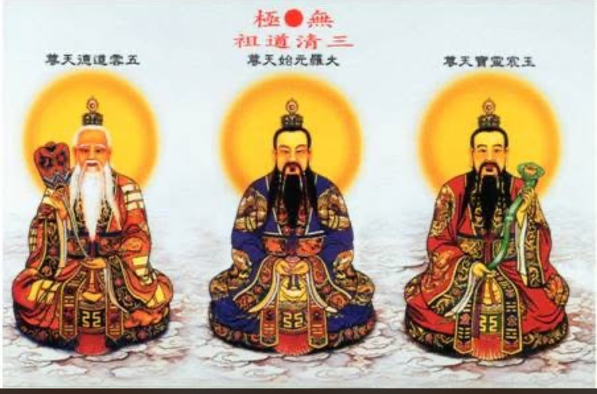
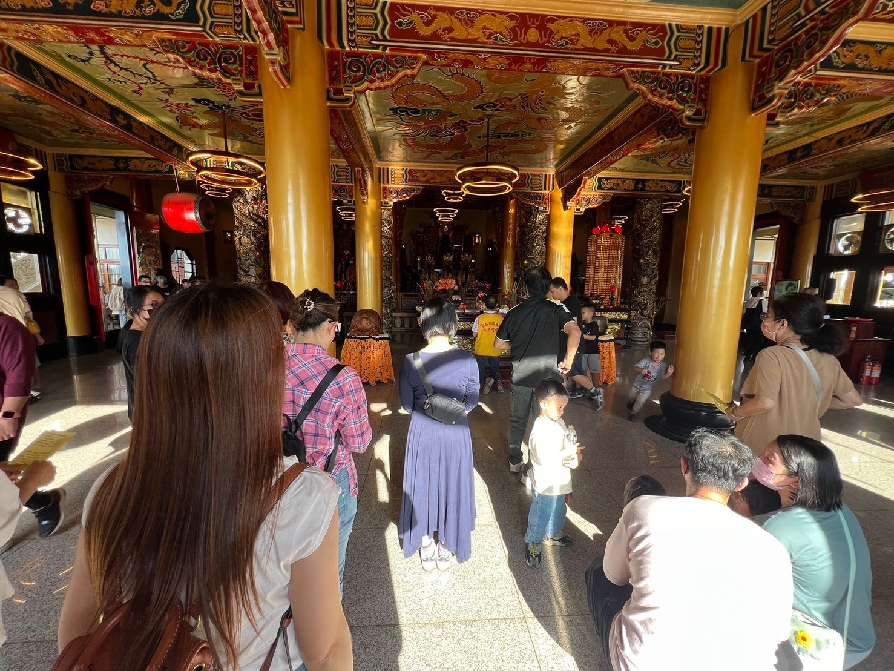
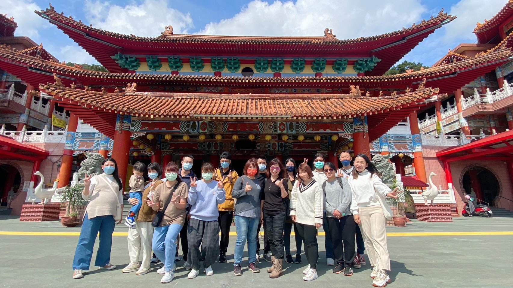

道場緣起

本修行道場設立之初， 乃因感念世人身心困頓、煩惱叢生， 故以弘揚正信道法、 導引眾生回歸本性為宗旨。
修行不在遠山深林， 而在一念覺悟。 本道場以「修心為本、行德為用」 為修持根本。

本道場秉持濟世度人之志， 長年致力於心靈關懷與教化輔導， 協助信眾建立正知正念。
願來此修學之人， 皆能在修持中安頓身心， 在行德中圓滿人生。

本道場亦重視戒律與品行， 提倡簡樸生活、 正念飲食與節制身口意業， 使修行真正落實於生活之中。
未來， 道場將持續推動正信修行教育， 與社會共行正道， 與眾生同證光明。